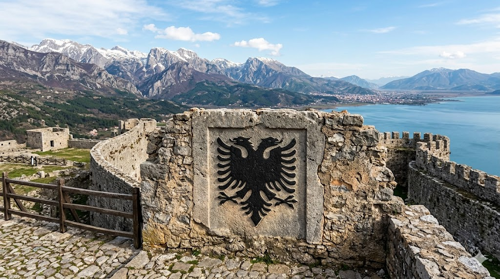

העיט כפול-הראש
Double-headed Eagle • Albania
א. אטימולוגיה (חקר השם והסמל)
השורש האלבני העתיק: Shqiponja
הזהות האלבנית שזורה בשמו של העיט יותר מכל אומה אחרת בעולם:
האלבנים אינם קוראים לארצם "אלבניה" בשפתם, אלא "Shqipëria". המילה מבוססת על השורש shqip או shqiponjë, שפירושו המילולי הוא "עיט". לפיכך, משמעות שמה של המדינה הוא "ארץ העיטים", והאלבנים רואים עצמם כ"בני העיט" (Shqiptarët).
העיט כפול-הראש הוא סמל הראלדי שמקורו באימפריה הביזנטית. שני הראשים הצופים לשני כיוונים מנוגדים סימלו את שליטתה של האימפריה גם על המזרח (אסיה) וגם על המערב (אירופה), וכן את העירנות המוחלטת (Vigilance) מול אויבים מכל עבר.
הסוג: Aquila (העיט האמיתי)
מקור: לטינית
על אף שהסמל הוא מיתולוגי, הציפור האמיתית החיה בהרי הבלקן ומייצגת את האתוס האלבני היא העיט (Aquila). בלטינית עתיקה המילה מציינת את כל העיטים האמיתיים הכהים.
המין: chrysaetos
מקור: יוונית עתיקה
משמעותו "עיט זהב". העיט הזהוב הוא הטורף האווירי הדומיננטי בהרי צפון אלבניה, והוא המקור הפיזיולוגי שעליו בוסס הסמל הדו-ראשי.
ניתוח זואולוגי: המקור החי (העיט הבלקני)
יא כמות ביצים בכל הטלה
בהתייחס לעיט החי בהרי אלבניה שעליו מבוסס הסמל, הנקבה מטילה 1 עד 3 ביצים בכל מחזור רבייה. הקן הענק נבנה על צוקים תלולים, בלתי נגישים בלב האלפים האלבניים.
יב תקופת הדגירה
משך הדגירה בטבע נמשך בין 41 ל-45 ימים. כמו בסמל הדו-ראשי המייצג שיתוף פעולה והגנה מושלמת, גם בטבע ההורים משתפים פעולה בהגנה על הקן מפני סכנות הרי הבלקן.
יג תפוצה גאוגרפית
במובן הביולוגי, הוא שולט ברכסי ההרים הגבוהים של הבלקן. במובן המיתולוגי, הסמל הדו-ראשי התפשט והיה נפוץ בכל רחבי האימפריה הביזנטית והאימפריה הרומית הקדושה, מאלבניה, דרך סרביה ועד רוסיה הצארית.
יד מבנה חברתי ונאמנות
כמו הנאמנות הבלתי מתפשרת של העם האלבני למולדתו, כך גם העיט בטבע הוא מין מונוגמי לכל החיים. הזוג חולק נחלה אחת, שומר עליה בקנאות ומעביר אותה מדור לדור במשך עשרות שנים.
ב. שנות חיים
בטבע, העיט שעליו מבוסס הסמל חי כ-20 שנים. במיתולוגיה האלבנית, העיט הוא נצחי, אלמותי (Immortal), ומייצג את הישרדותה של האומה הבלקנית אל מול כיבושים עות'מאניים ממושכים.
ג. גודל ועוצמה
מוטת כנפיים (ביולוגית): עד 2.3 מטרים.
גודל מיתולוגי: כנפיו פורשות חסות על הרי אלבניה כולה.
צבע הסמל: צללית שחורה עזה (Sable) על רקע דם אדום (Gules).
ד. סיבת הבחירה כסמל לאומי - מורשת סקנדרבג
העיט כפול-הראש הפך לסמל ההתנגדות והלאומיות של אלבניה בזכות גיבור אחד: ג'רג' קסטריוטי סקנדרבג (Skanderbeg). במאה ה-15, סקנדרבג איחד את הנסיכויות האלבניות השבטיות והוביל מרד מזהיר נגד האימפריה העות'מאנית הכבירה. הוא נשא דגל אדום עם עיט שחור כפול-ראש (שהיה במקור סמל משפחת האצולה שלו, שנגזר מהסמל הביזנטי).
במשך עשרות שנים, סקנדרבג הדף פלישות טורקיות ענקיות והפך ל"מגן הנצרות". מאז, העיט השחור על הרקע האדום נחקק בדם הזיכרון הקולקטיבי האלבני כסמל לחירות, גבורה עילאית, ועמידה איתנה של מעטים מול רבים.
ה. הבדלים בין זכר ונקבה
בסמל המיתולוגי אין הבדלי מגדר – שני הראשים מסמלים שוויון, אחדות ואת המיזוג בין הדת לבין השלטון האזרחי בביזנטיון. בטבע (העיט החי), כמו אצל רוב הדורסים, הנקבה גדולה וכבדה יותר מהזכר (דימורפיזם זוויגי הפוך), ושניהם חולקים את אותו צבע חום-שחור עמוק שהיווה השראה לדגל.
ו. שם בנגלה של הסמל
דו-מאטה איגל (দু-মাথা ঈগল)
תרגום מילולי בבנגלית: עיט (ঈগল) בעל שני (দু) ראשים (মাথা).
ז. שנת הגילוי (הופעה היסטורית)
1443
השנה בה סקנדרבג הניף לראשונה את דגל העיט השחור כפול-הראש בעיר קרויה (Krujë) עם שובו למרוד בעות'מאנים.
ט. תזונה מיתולוגית
בעוד העיט הביולוגי ניזון מיונקים הרריים כגון שועלים ומכרסמים, ה"עיט האלבני" בפולקלור הוא עוף גאה הניזון מאומץ הלב של לוחמיו ו"ניזון מתבוסתם של אויבי המולדת". עיט זה לעולם אינו אוכל נבלות, סמל לטוהר המידות של העם האלבני.
ח. נסיבות הגילוי, מקורות חיטיים וביזנטיים
אף על פי שסקנדרבג עשה בו שימוש כדי לאחד את אלבניה, העיט הדו-ראשי לא "התגלה" לראשונה באלבניה. שורשיו העתיקים ביותר נמצאים בתרבות החיתית ובשומר העתיקה במסופוטמיה (אלפיים שנה לפני הספירה), שם נמצאו תבליטי אבן של נשרים כפולי ראש.
הסמל אומץ מאוחר יותר בימי הביניים על ידי האימפריה הביזנטית (תחת שושלת פלאיולוגוס) כסמל למדינה ולכנסייה האורתודוקסית, ושני הראשים צופים באופן סמלי לכיוון מערב (רומא) ומזרח (קונסטנטינופול). משפחות אצולה אלבניות אימצו את הסמל כדי להפגין את הקשר שלהן למורשת הביזנטית הגדולה, וכך הוא השתרש במדינה.
י. מצב השימור של האתוס
סמל נצחי (Eternal Icon)
כסמל, העיט הדו-ראשי האלבני הוא אלמותי ומשומר בחוקת המדינה. בטבע, לעומת זאת, העיט הזהוב האמיתי המייצג אותו סובל באלבניה מציד בלתי חוקי והרעלות (מוגדר כ-Vulnerable בבלקן). הממשלה האלבנית מנסה כיום לקדם מאמצי שימור ענפים תחת הסיסמה "מצילים את העיט של אלבניה" כדי להגן על החיה המייצגת את נשמת האומה.